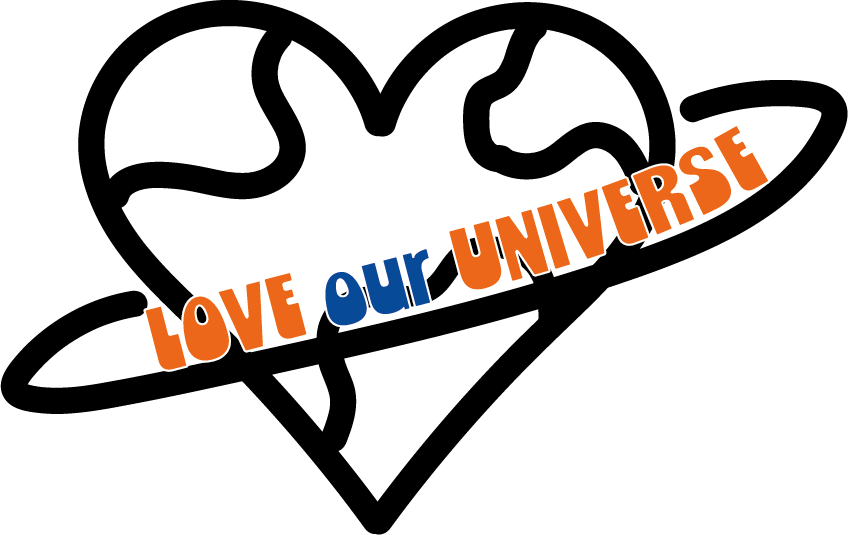

We moeten dringend actie ondernemen voor het milieu om onze toekomst veilig te stellen. Ik heb genoeg informatie en tips verzameld over hoe je milieuvriendelijker en bewust kunt leven. Let's Save Our Planet!
Piraminder
Een piraminder (“Ladder van Lansink - De Afvalhiërarchie”) is een omgekeerde piramide waarin beschreven wordt hoe mensen op een duurzame manier producten kunnen herbruiken. Ook als consument kun je heel concreet jouw voetafdruk op de aarde verkleinen. Namelijk door bewust te consumeren. Daarbij kan je de Piraminder goed voor gebruiken!
De lokatie kringloopbedrijf
Wat is een betere plek om te zijn dan een kringloopwinkel. Mijn favoriete kringloopwinkel is De Lokatie en heeft winkels op verschillende locaties in Amsterdam. Je vindt er muziek, films, kleding, woonartikelen en nog veel meer! Het is mijn go-to kringloopwinkel waar ik regelmatig kom. Ik koop spullen maar geef ook spullen weg die ik niet meer gebruik en hoop er iemand anders blij mee te maken. Ik raad mensen echt aan om een kringloopwinkel een kans te geven. Het is niet raar of vies. Je bent je bewust van wat je koopt.
Kringloopwinkels helpen het milieu door afval en vraag naar nieuwe producten te verminderen. Ze bieden betaalbare spullen, creëren werkgelegenheid, en maken unieke, tweedehands vondsten toegankelijk.
Info
Gemaakt door een CMD Student
Deze webpagina behaalt een CO₂-beoordeling van A+
Amsterdam University of Applied Sciences